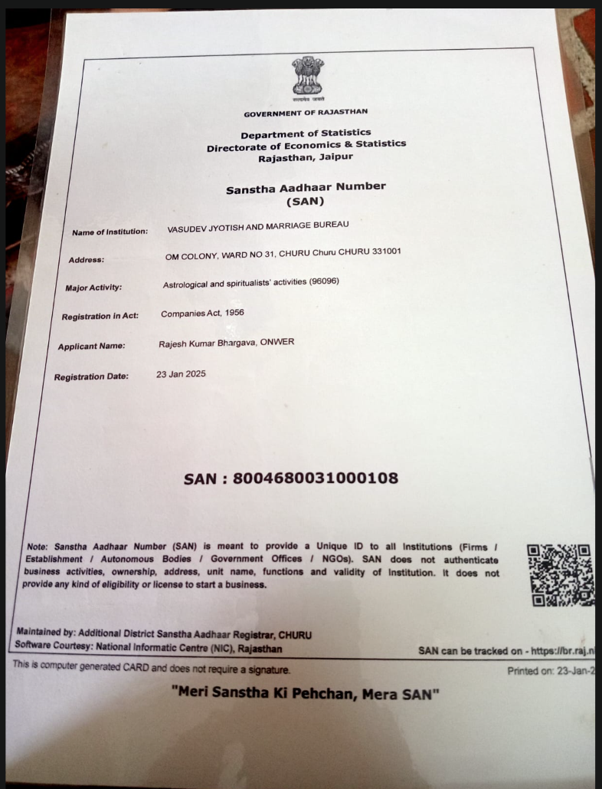
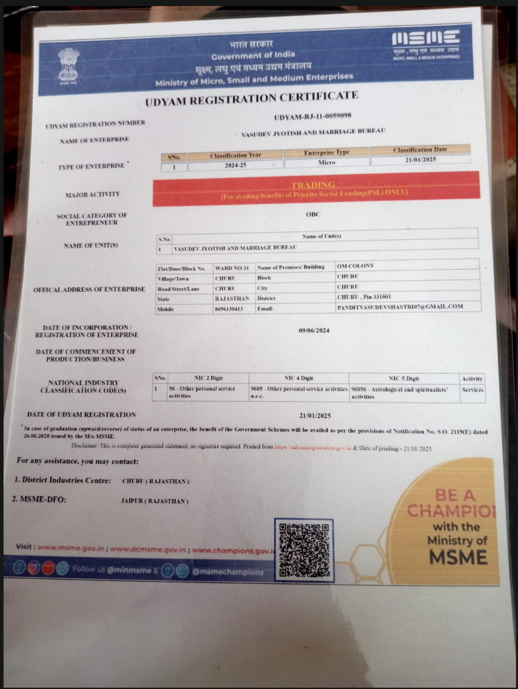

Vasudev Jyotish
& Marriage Bureau
Guided by Pandit Vasudev Shastri (Rajesh Kumar Bhargava), we help families find the right match through kundli milan and time‑honoured Vedic astrology — alongside horoscope reading, palmistry and spiritual guidance for every stage of life.
A trusted name for marriage matching in Churu
Vasudev Jyotish and Marriage Bureau is run from Om Colony, Ward No. 31, Churu, Rajasthan, under the guidance of Pandit Vasudev Shastri (registered proprietor Rajesh Kumar Bhargava). The bureau brings together Vedic astrology and personal matchmaking so that families can approach an alliance with clarity and confidence.
While marriage matchmaking and kundli milan remain the bureau's core specialty, consultations are also offered for horoscope reading, palmistry, and general astrological guidance — all grounded in classical Vedic practice.
Marriage matching, at the heart of everything we do
Every consultation is rooted in traditional Vedic astrology, with marriage matchmaking as our founding speciality.
Marriage Matchmaking & Kundli Milan
Personalised matchmaking support for families, backed by traditional guna milan and horoscope compatibility analysis — helping you move toward an alliance with confidence.
Horoscope & Birth Chart Analysis
Detailed janam kundli preparation and reading to understand life direction, timing and planetary influence.
Hast Rekha (Palm Reading)
Reading of the life, heart, head and fate lines to offer insight into relationships, career and wellbeing.
Remedies & Spiritual Guidance
Practical remedial guidance drawn from Vedic tradition for family, relationship and life concerns.
Vastu Consultation
Guidance on home and workplace layout aligned with Vastu Shastra principles for balance and harmony.
Officially registered with the Government of India
Vasudev Jyotish and Marriage Bureau holds a Sanstha Aadhaar Number issued by the Government of Rajasthan and an Udyam Registration issued by the Ministry of MSME — confirming this is a genuine, on‑record establishment.

Sanstha Aadhaar Number (SAN)
- SAN8004680031000108
- Issuing AuthorityGovt. of Rajasthan, Dept. of Statistics
- Registered UnderCompanies Act, 1956
- Registration Date23 Jan 2025

Udyam Registration Certificate
- Udyam No.UDYAM‑RJ‑11‑0059098
- Enterprise TypeMicro (2024‑25)
- NIC Activity96096 · Astrological Services
- Date of Registration21/01/2025
Certificates are Government‑issued identity records for the establishment. As per official guidance, a SAN / Udyam registration does not itself certify individual services, but it does confirm this bureau is a genuine, on‑record institution.
A simple path from first call to match
A straightforward process designed around your family's comfort and pace.
Share Your Details
Call or WhatsApp with birth details and your matchmaking or astrology requirement.
Kundli Preparation
Your birth chart is prepared and reviewed against classical Vedic principles.
Guidance Session
A personal consultation to discuss compatibility, timing and any remedies suggested.
Ongoing Support
Continued guidance through the matchmaking process, as needed by your family.
Frequently asked questions
A few things families commonly ask before their first consultation.
Date, time and place of birth for both individuals is generally sufficient to prepare a kundli and begin compatibility matching.
Yes. Vasudev Jyotish and Marriage Bureau holds a Sanstha Aadhaar Number (SAN 8004680031000108) from the Government of Rajasthan and an Udyam Registration (UDYAM‑RJ‑11‑0059098) from the Ministry of MSME. Both certificates are shown above.
Yes. Marriage matchmaking is our founding speciality, and we also offer horoscope reading, palmistry and general Vedic astrology guidance.
Call or WhatsApp us at +91 86961 30413, or write to panditvasudevshastri07@gmail.com and we'll arrange a suitable time.
Reach the Bureau
Begin with a conversation
Speak directly with Pandit Vasudev Shastri about your marriage matching or astrology requirement — no obligation, just guidance.